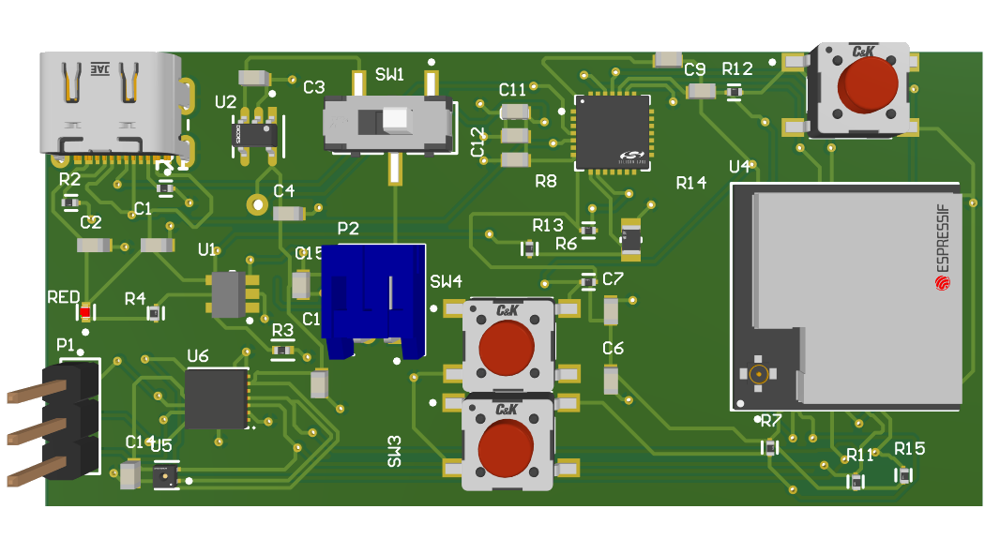

FreshPal Smart Sensor
Custom PCB that detects food spoilage by sensing ammonia
PCB Design
Embedded / IoT
Altium
C++
3rd place · DECA Internationals
Custom PCB that detects food spoilage by sensing ammonia
Counterfeit semiconductor detection using DAC linearity signatures (DNL/INL)
Inverting op-amp stage with an active anti-aliasing filter
Ignitors Rocketry Team
Flight Computer Team
Creating a custom flight computer for high-powered rocketry. Using Altium Designer and LTspice to design and simulate the avionics hardware.
Electronics Mentee
Trained in rocket avionics and embedded systems: microcontrollers, sensors, and UART / I2C / SPI.
Texas Student Rocket Propulsion Laboratory
Avionics Team
Member of the avionics team, helping design and test the onboard electronics for the rocket's avionics bay.
IEEE
Institute of Electrical and Electronics Engineers
Member of the Texas A&M student branch.
Custom 2-layer PCB that pairs an ESP32 with an I2C temperature/humidity sensor and a Winsen GM-802B MEMS ammonia (NH₃) sensor to catch food spoilage in resturaunt refrigerators.

An inverting op-amp signal-conditioning amplifier, designed and simulated in Texas Instruments' TINA-TI software, then laid out as a physical PCB in Altium Designer.
I sized the feedback network to set a passband gain of 23.28 dB (≈14.6 V/V) and simulated the response in TINA-TI to verify gain and behavior across the audio band.
The design integrates an active low-pass anti-aliasing filter stage with a cutoff near 1.06 kHz, band-limiting the signal ahead of a downstream analog-to-digital converter.
The simulated schematic was then translated into a PCB layout in Altium Designer, turning the verified design into a manufacturable board.
Counterfeit semiconductor detection using DNL/INL measurements from each chip's DAC.
The method uses DAC Differential Nonlinearity (DNL) and Integral Nonlinearity (INL) measurements as a chip-level “fingerprint.” These signatures come from each chip's hyper-specific manufacturing process, and are plotted during the semiconductor testing phase.
To collect the data, an Arduino Uno steps an MCP4725 12-bit DAC through all 4,096 codes and measures each output with an ADS1115 16-bit ADC on the same I2C bus, averaging 16 readings per code and streaming the results to MATLAB over serial.
The statistics were done in MATLAB, which includes computing DNL and INL from each sweep and applying control charts to these linearity signatures.
The classifier distinguished genuine parts from counterfeits with 98.7% accuracy. We presented it to a panel of industry judges to win 1st place and the $5,000 grand prize at Aggies Invent: Hardware Resilience.